library(dplyr)
library(ggplot2)
library(olympicAthletes)Solutions for the end-of-chapter exercises in Chapter 2 — Data Visualization. The dataset is olympic_athletes (≈315k athlete-event rows, 1896–2026), accompanied by medal_table (medal counts per Games × NOC for 2018–2026) and editions (metadata for the five most recent Games), all from the olympicAthletes package.
TipSection coverage at a glance
Exercises per section — count of prompts that touch each book section.
| Book section | # of exercises |
|---|---|
| Setup / data exploration (chapter overview) | 4 |
| 2.1 The grammar of graphics | 1 |
| 2.2 Five named graphs (5NG) | 0 |
| 2.3 Scatterplots | 6 |
| 2.4 Linegraphs | 3 |
| 2.5 Histograms | 4 |
| 2.6 Facets | 3 |
| 2.7 Boxplots | 5 |
| 2.8 Barplots | 7 |
| Critical thinking / open exploration | 6 |
| Extensions | 10 |
Exercises by subsection — which prompts target each finer-grained subsection.
| Subsection | Exercises |
|---|---|
| Setup and data exploration | EX2.1, EX2.2, EX2.3, EX2.4 |
| 2.1 The grammar of graphics | EX2.5 |
2.3 Scatterplots (geom_point) |
EX2.6, EX2.9, EX2.10, EX2.11 |
2.3.1 Overplotting (alpha, color) |
EX2.7, EX2.8 |
2.4 Linegraphs (geom_line) |
EX2.12, EX2.13, EX2.14 |
2.5 Histograms (geom_histogram) |
EX2.15, EX2.17, EX2.18 |
| 2.5.1 Adjusting bins | EX2.16 |
2.6 Facets (facet_wrap) |
EX2.19, EX2.20, EX2.21 |
2.7 Boxplots (geom_boxplot, IQR rule) |
EX2.22, EX2.23, EX2.24, EX2.25, EX2.26 |
2.8.1 Barplots (geom_bar vs geom_col) |
EX2.27, EX2.29, EX2.30 |
| 2.8.2 Must avoid pie charts | EX2.31 |
| 2.8.3 Two categorical variables (stacked / dodged / fill) | EX2.28, EX2.32, EX2.33 |
| Critical thinking / open exploration | EX2.34, EX2.35, EX2.36, EX2.37, EX2.38, EX2.39 |
| Extensions | EX2.40, EX2.41, EX2.42, EX2.43, EX2.44, EX2.45, EX2.46, EX2.47, EX2.48, EX2.49 |
A note on coverage. Section 2.2 (“Five named graphs”) is a 15-line transition — it lists the geoms covered next and has nothing to assess on its own; the named graphs themselves (Sections 2.3–2.8) carry all the practice.
Difficulty stars on each exercise: ★ warm-up, ★★ standard application, ★★★ critical thinking. Click show question on any callout to reveal the prompt; the solution is always visible underneath.
Setup and exploration
NoteEX2.1 — show question
EX2.1 (★) Load olympicAthletes, then run glimpse() on each of the three datasets. How many rows and how many columns does each have?
Solution (reference: Chapter 2, “Data Visualization”, overview).
olympic_athletes ≈ 314,749 × 15; medal_table ≈ 273 × 9; editions ≈ 5 × 14.
glimpse(medal_table)Rows: 1,929
Columns: 11
$ edition_id <int> 1, 1, 1, 1, 1, 1, 1, 1, 1, 1, 1, 2, 2, 2, 2, 2, 2, 2, 2, 2,…
$ games <chr> "1896 Summer", "1896 Summer", "1896 Summer", "1896 Summer",…
$ year <int> 1896, 1896, 1896, 1896, 1896, 1896, 1896, 1896, 1896, 1896,…
$ season <chr> "Summer", "Summer", "Summer", "Summer", "Summer", "Summer",…
$ noc <chr> "USA", "GRE", "GER", "FRA", "GBR", "HUN", "AUT", "AUS", "DE…
$ country <chr> "United States", "Greece", "Germany", "France", "Great Brit…
$ gold <int> 11, 10, 6, 5, 2, 2, 2, 2, 1, 1, 1, 31, 20, 20, 6, 6, 4, 3, …
$ silver <int> 7, 18, 5, 4, 3, 1, 1, 0, 2, 2, 0, 41, 13, 8, 6, 3, 3, 2, 3,…
$ bronze <int> 2, 19, 2, 2, 2, 3, 2, 0, 3, 0, 1, 40, 15, 9, 6, 1, 2, 0, 2,…
$ total <int> 20, 47, 13, 11, 7, 6, 5, 2, 6, 3, 2, 112, 48, 37, 18, 10, 9…
$ notes <chr> "", "", "", "", "", "", "", "", "", "", "Mixed-NOC team (at…glimpse(editions)Rows: 62
Columns: 15
$ edition_id <int> 1, 2, 3, 4, 5, 6, 50, 7, 8, 29, 9, 30, 10, 31, 11, 32…
$ games <chr> "1896 Summer", "1900 Summer", "1904 Summer", "1906 Su…
$ year <int> 1896, 1900, 1904, 1906, 1908, 1912, 1916, 1920, 1924,…
$ season <chr> "Summer", "Summer", "Summer", "Summer", "Summer", "Su…
$ city_local_latin <chr> "Athína", "Paris", "St. Louis", "Athína", "London", "…
$ city_english <chr> "Athens", "Paris", "St. Louis", "Athens", "London", "…
$ country <chr> "Greece", "France", "United States", "Greece", "Great…
$ opening_ceremony <date> 1896-04-06, NA, 1904-05-14, 1906-04-22, 1908-07-13, …
$ closing_ceremony <date> 1896-04-15, NA, NA, 1906-05-02, 1908-07-25, 1912-07-…
$ participants <int> 176, 1241, 650, 841, 2024, 2409, NA, 2680, 3255, 312,…
$ nocs <int> 13, 26, 10, 21, 23, 28, NA, 29, 45, 19, 46, 25, 47, 1…
$ medal_events <int> 43, 95, 95, 74, 110, 107, NA, 162, 131, 17, 125, 14, …
$ disciplines <int> 10, 22, 18, 14, 24, 23, NA, 33, 27, 10, 24, 8, 26, 7,…
$ notes <chr> "", "", "", "Intercalated Games; not officially recog…
$ source <chr> "https://www.olympedia.org/editions/1", "https://www.…
NoteEX2.2 — show question
EX2.2 (★) For each column in olympic_athletes, classify it as numerical or categorical. There are some that look numerical but behave categorically — name at least one and justify.
Solution (reference: Chapter 1, “Identification and measurement variables”).
Numerical: age, height, weight, year. Categorical: sex, team, noc, games, season, city_english, sport, event, medal. Identifier: id, name. Year is interesting — stored as integer, but for grouping/coloring purposes it acts like a small set of categorical levels (every 4 years).
NoteEX2.3 — show question
EX2.3 (★) year stores values like 1896, 2024. Why is treating year as numerical (continuous x-axis on a linegraph) often more useful than treating it as categorical? When would the categorical interpretation be useful?
Solution (reference: Sections 2.4 “Linegraphs” and 2.8 “Barplots”).
Treating year as numerical preserves the ordering and spacing of time, which is what a linegraph needs. Treating it as categorical (factor) can be useful for boxplots or grouped barplots where each Games is its own category to compare side-by-side.
NoteEX2.4 — show question
EX2.4 (★) Build the simplest scatterplot you can: weight (y) vs height (x) on olympic_athletes. When the plot renders, R will print a warning like Removed N rows containing missing values (geom_point). Read the warning and report N. What does that tell you about which athlete-rows have complete bio data — and why might older Games be over-represented in the missing rows?
Solution (reference: Chapter 2 overview, exploring the data).
The plot renders, but you’ll see a warning along the lines of Removed ~70,000 rows containing missing values (geom_point()). That’s the rows where either height or weight is NA — roughly a third of the data set. Bio data wasn’t systematically reported in early-20th-century Games; coverage improved over time but is still incomplete for the most recent Games (athlete privacy and late data ingest). The takeaway: any pattern you see in this scatterplot describes only the subset of athletes with complete bio data, which is not a random sample of all Olympians.
ggplot(olympic_athletes, aes(x = height, y = weight)) +
geom_point(alpha = 0.05)Warning: Removed 92382 rows containing missing values or values outside the scale range
(`geom_point()`).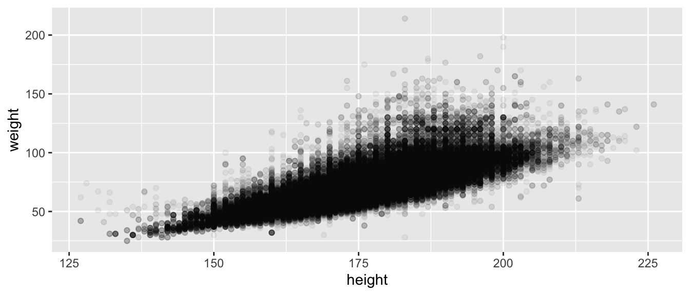
Grammar of graphics
NoteEX2.5 — show question
EX2.5 (★) Run the snippet below. Identify the three pieces of the grammar of graphics at play: the data, the aesthetic mappings (which variable is assigned to which of x, y, and color?), and the geom. Bonus: if you wanted to layer individual points on top of the boxes, which kind of layer would you add?
Solution (reference: Section 2.1 “The grammar of graphics”).
- Data:
olympic_athletes(filtered tosport == "Athletics"). - Aesthetic mappings (the
aes()call):x = sex,y = height,color = sex—sexis mapped to two channels (the x-axis position and the box color). - Geom:
geom_boxplot()— one box per level of the x variable.
Bonus — layering points on top: add a geom_jitter() (or geom_point() with horizontal jitter) layer:
olympic_athletes |>
filter(sport == "Athletics") |>
ggplot(aes(x = sex, y = height, color = sex)) +
geom_boxplot(outlier.shape = NA) +
geom_jitter(width = 0.1, alpha = 0.05)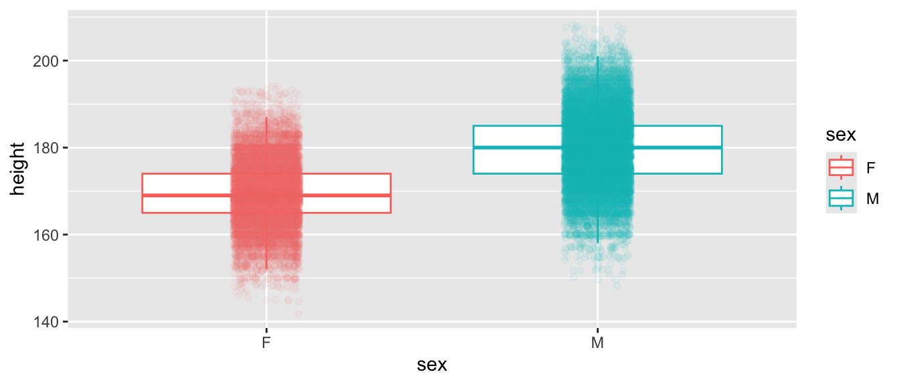
The grammar’s power is exactly this — the boxplot and jittered points share the same data and aesthetics, so they line up automatically.
Scatterplots
NoteEX2.6 — show question
EX2.6 (★★) Build a scatterplot of weight (y) vs height (x) for all athletes. What overall pattern do you see? Do you see overplotting?
Solution (reference: Section 2.3 “Scatterplots”).
A clear positive linear association — taller athletes tend to be heavier. With ~315k points, the cloud is heavily over-plotted near the median.
ggplot(olympic_athletes, aes(x = height, y = weight)) +
geom_point()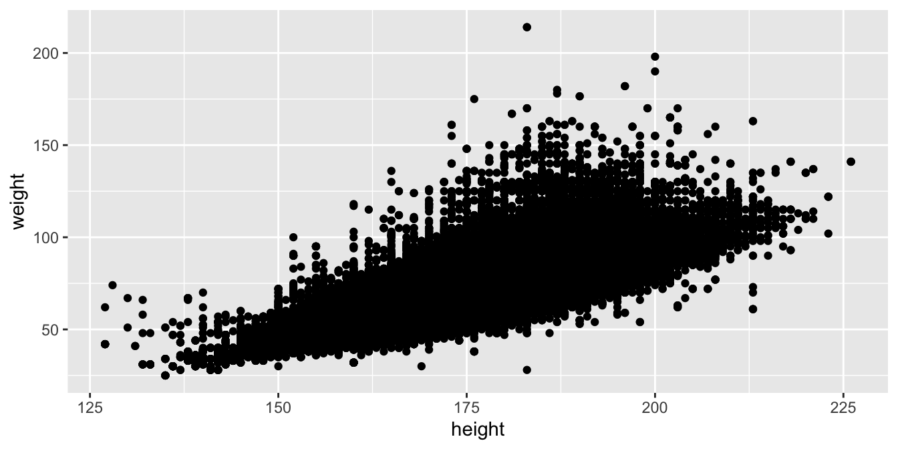
NoteEX2.7 — show question
EX2.7 (★★) Modify your scatterplot to color points by sex. What pattern does coloring reveal that the single-color version hid?
Solution (reference: Section 2.3.1 “Overplotting”).
Two overlapping clouds — the female cloud sits below-left of the male cloud (lower height, lower weight on average) but with substantial overlap.
ggplot(olympic_athletes, aes(x = height, y = weight, color = sex)) +
geom_point(alpha = 0.05)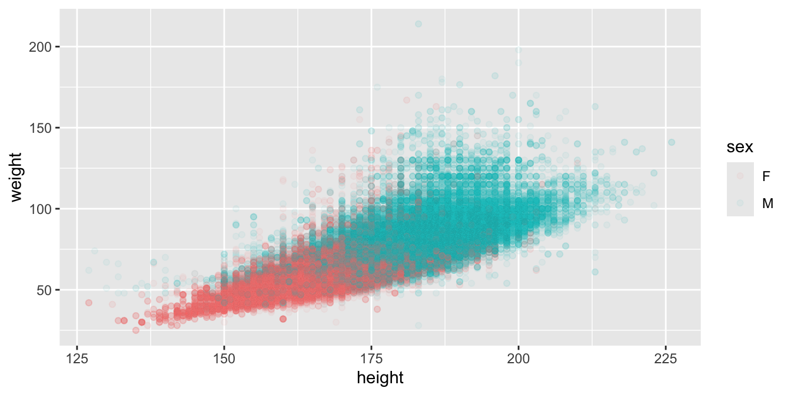
NoteEX2.8 — show question
EX2.8 (★★) Set alpha = 0.05 on geom_point(). Compare to the un-faded version. Where is the densest cluster?
Solution (reference: Section 2.3.1 “Overplotting”).
With alpha = 0.05 the densest core (around ~175 cm and ~70 kg) becomes visible. The opaque version hides this peak under a black blob.
ggplot(olympic_athletes, aes(x = height, y = weight)) +
geom_point(alpha = 0.05)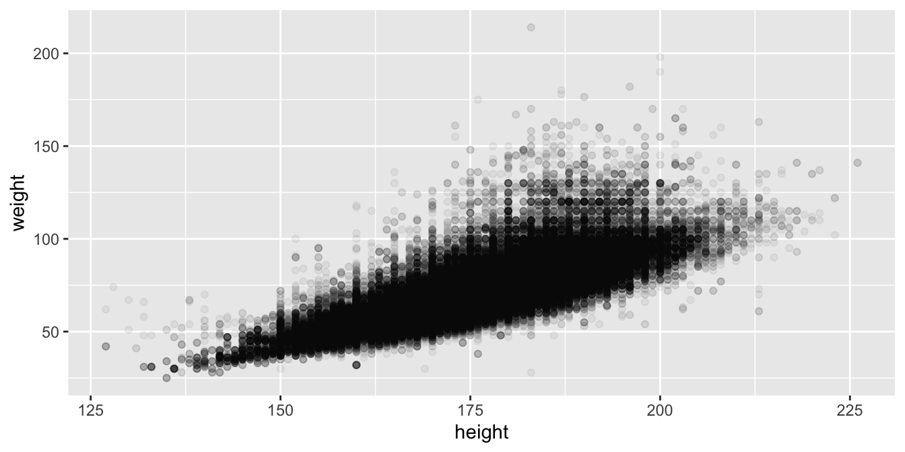
NoteEX2.9 — show question
EX2.9 (★★) Filter the data to sport == "Gymnastics" and rebuild the Height vs Weight scatterplot. How does the cloud differ from the all-sport view?
Solution (reference: Section 2.3 “Scatterplots”).
The cloud is shifted left and down compared to all-athletes — gymnasts are typically shorter and lighter.
olympic_athletes |>
filter(sport == "Gymnastics") |>
ggplot(aes(x = height, y = weight, color = sex)) +
geom_point(alpha = 0.4)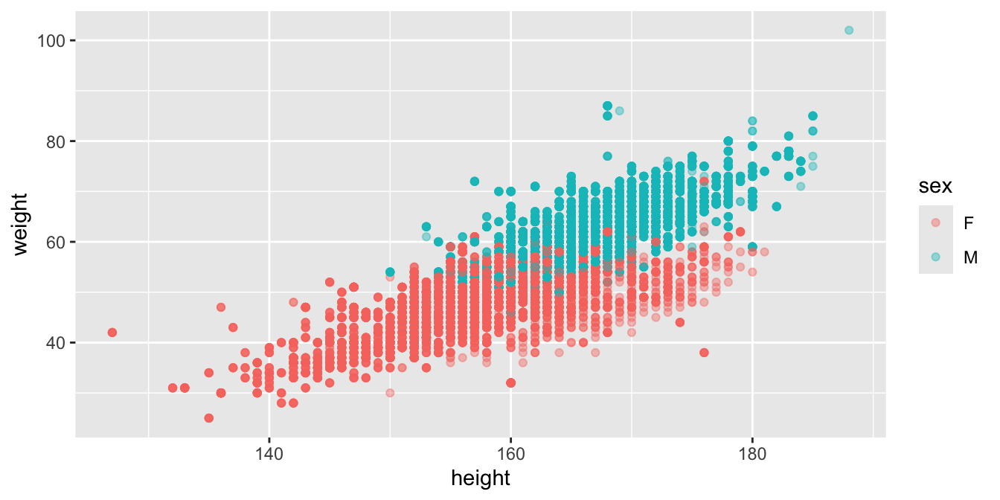
NoteEX2.10 — show question
EX2.10 (★★) Filter to sport == "Basketball" and rebuild. Compared with gymnastics, where on the (Height, Weight) plane do basketball athletes sit?
Solution (reference: Section 2.3 “Scatterplots”).
Basketball players cluster at the upper-right — much taller (often 190+ cm) and heavier than gymnasts.
olympic_athletes |>
filter(sport == "Basketball") |>
ggplot(aes(x = height, y = weight, color = sex)) +
geom_point(alpha = 0.4)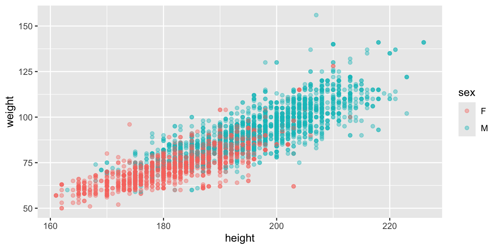
NoteEX2.11 — show question
EX2.11 (★★) Add labs() to your favorite of the above plots — title, axis labels in human language, and a caption naming the data source. Why are good labels especially important when sharing plots?
Solution (reference: Section 2.3 “Scatterplots”, grammar of graphics layers).
Good labels turn a chart from “data” into a communication artifact. A reader who sees only the image — not your code — needs to know what’s plotted, in what units, and where the data came from.
olympic_athletes |>
filter(sport == "Basketball") |>
ggplot(aes(x = height, y = weight, color = sex)) +
geom_point(alpha = 0.4) +
labs(
title = "Olympic basketball athletes are tall, regardless of sex",
subtitle = "1896–2026 Summer games",
x = "height (cm)", y = "weight (kg)", color = "sex",
caption = "Source: olympicAthletes R package"
)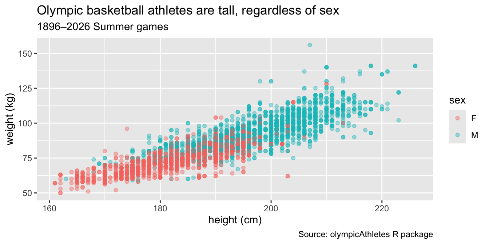
Linegraphs
NoteEX2.12 — show question
EX2.12 (★★) Using medal_table (which already records gold per Games × NOC), plot gold medals (y) vs year (x) for "USA" as a linegraph. Add points on top of the line with geom_point() to mark each Games.
Solution (reference: Section 2.4 “Linegraphs”).
medal_table |>
filter(noc == "USA") |>
ggplot(aes(x = year, y = gold)) +
geom_line() + geom_point() +
labs(x = "games (year)", y = "Gold medals (USA)")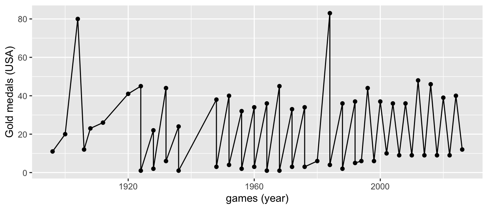
NoteEX2.13 — show question
EX2.13 (★★) Using the editions data frame from olympicAthletes (one row per Games, participants already counted), plot participants (y) vs year (x) as a linegraph. Filter to a single season first — combining Summer and Winter would zigzag two different cycles. Has the number of athletes per Games grown over time?
Solution (reference: Section 2.4 “Linegraphs”).
editions has one row per Games, with participants already counted — perfect for a linegraph. We filter to a single season so the x-axis is a single ordered sequence (Summer and Winter alternate every two years and would zig-zag if mixed).
editions |>
filter(season == "Summer") |>
ggplot(aes(x = year, y = participants)) +
geom_line() + geom_point() +
labs(y = "Participants", title = "Summer Olympics: athletes per Games over time")Warning: Removed 3 rows containing missing values or values outside the scale range
(`geom_point()`).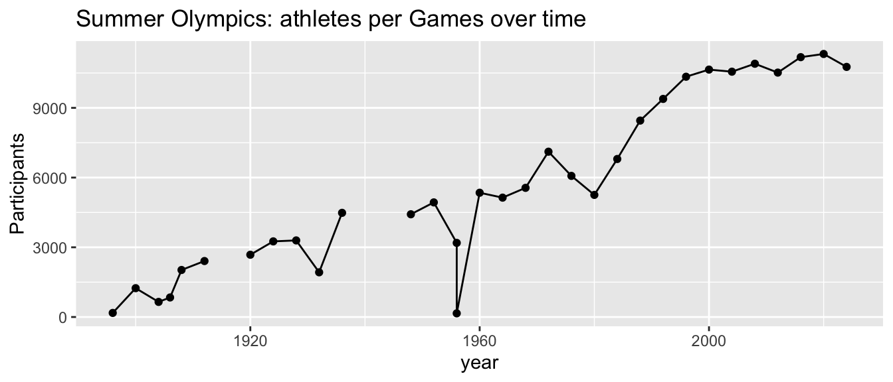
Participation grows roughly monotonically over the century, with notable dips at the World War years.
NoteEX2.14 — show question
EX2.14 (★★) Using editions, plot medal_events (y) vs year (x) as a linegraph, with color = season so Summer and Winter appear as two separate lines on the same axes. Has the number of medal events grown more in one season than the other?
Solution (reference: Section 2.4 “Linegraphs”, color aesthetic).
Both Summer and Winter trend upward, but Summer’s growth is much steeper — most of the new medal events over the past 50 years (skateboarding, surfing, climbing, BMX freestyle) have been Summer.
ggplot(editions, aes(x = year, y = medal_events, color = season)) +
geom_line() + geom_point() +
labs(y = "medal events")Warning: Removed 5 rows containing missing values or values outside the scale range
(`geom_point()`).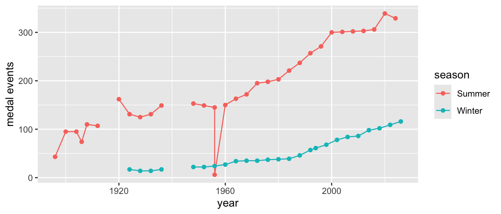
Histograms
NoteEX2.15 — show question
EX2.15 (★★) Build a histogram of age for all athletes. What’s the rough median? Are there suspicious values (very young / very old)?
Solution (reference: Section 2.5 “Histograms”).
Median age sits around 25. Tails reach into the teens and 50s+ — a few are real (equestrian, shooting) and a few may be data anomalies.
ggplot(olympic_athletes, aes(x = age)) +
geom_histogram(bins = 30) +
labs(x = "age (years)")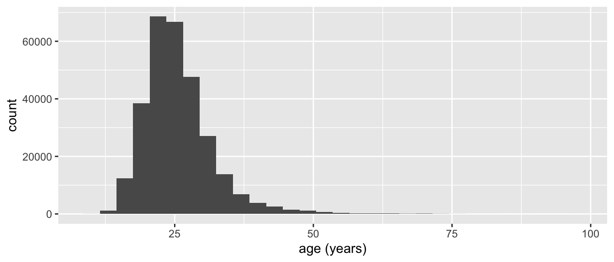
NoteEX2.16 — show question
EX2.16 (★★) Try bins = 10, then bins = 80. Which gives a more honest view of the age distribution? Why?
Solution (reference: Section 2.5.1 “Adjusting the bins”).
With bins = 10, fine structure is washed out. With bins = 80, noise dominates — every integer age gets a spike. Around bins = 30 is the sweet spot for this distribution.
ggplot(olympic_athletes, aes(x = age)) + geom_histogram(bins = 10)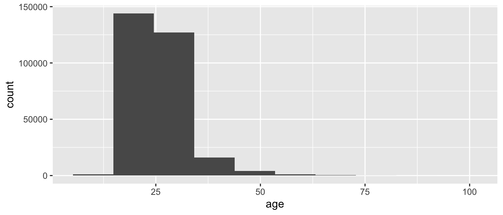
NoteEX2.17 — show question
EX2.17 (★★) Filter to season == "Winter" and plot a histogram of height. Repeat for season == "Summer". Which season has taller athletes on average?
Solution (reference: Section 2.5 “Histograms”).
Both distributions peak around 175 cm but Summer athletes have a slightly heavier upper tail (basketball/volleyball/rowing pull it up).
olympic_athletes |>
filter(season == "Summer") |>
ggplot(aes(x = height)) + geom_histogram(bins = 30) +
labs(title = "Summer games — height (cm)")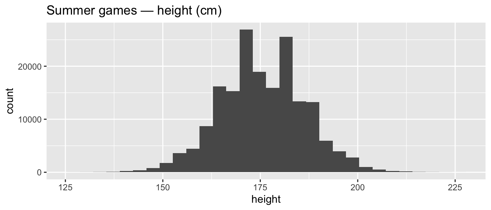
NoteEX2.18 — show question
EX2.18 (★★) A peer claims “Olympic athletes are mostly in their 20s.” Use a histogram to support or refute this claim with a one-sentence answer.
Solution (reference: Section 2.5 “Histograms”).
The histogram supports the claim — the bulk of the distribution sits between 20 and 30, with the central tendency in the mid-20s.
ggplot(olympic_athletes, aes(x = age)) +
geom_histogram(bins = 30, fill = "steelblue", color = "white")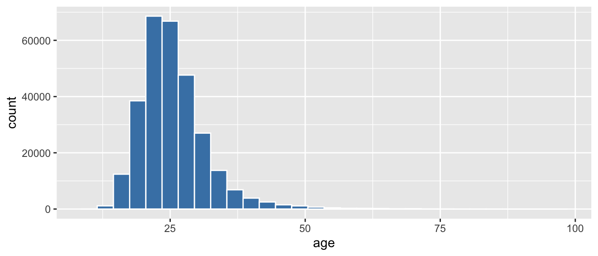
Facets
NoteEX2.19 — show question
EX2.19 (★★) Take your Height vs Weight scatterplot from EX2.6 and add facet_wrap(~ sex). What does faceting reveal that coloring did not (or vice versa)?
Solution (reference: Section 2.6 “Facets”).
Faceting separates the two clouds into their own panels — easier for spotting outliers within each group. Coloring keeps both on one set of axes — easier for comparing the two distributions side-by-side. Different jobs.
ggplot(olympic_athletes, aes(x = height, y = weight)) +
geom_point(alpha = 0.05) +
facet_wrap(~ sex)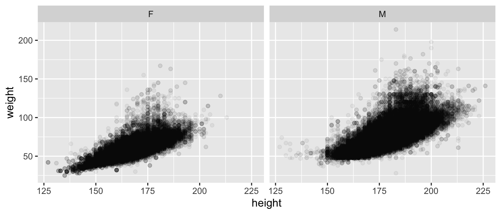
NoteEX2.20 — show question
EX2.20 (★★) Build a faceted histogram of age, one panel per season. How do the two distributions differ?
Solution (reference: Section 2.6 “Facets”).
ggplot(olympic_athletes, aes(x = age)) +
geom_histogram(bins = 30) +
facet_wrap(~ season, scales = "free_y")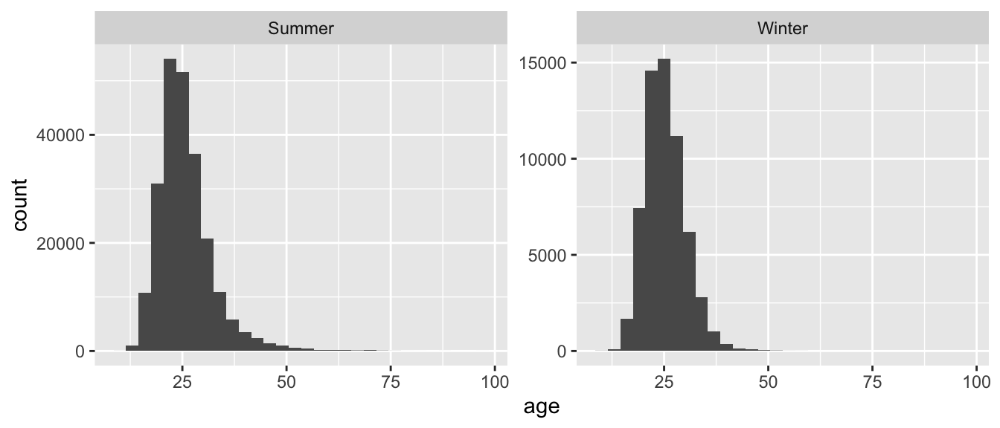
NoteEX2.21 — show question
EX2.21 (★★) Filter olympic_athletes to sport %in% c("Athletics", "Swimming", "Gymnastics", "Basketball", "Wrestling"). Use facet_wrap(~ sport) to show a height vs weight scatterplot for each of those five sports. Which sport’s cluster sits in the upper-right corner (taller and heavier)?
Solution (reference: Section 2.6 “Facets”).
Basketball sits up and to the right (tall + heavy), Gymnastics down and to the left (short + light), and the three middle sports cluster around average physiques. Faceting makes the sport-to-sport contrast much sharper than a single overlapping cloud could.
olympic_athletes |>
filter(sport %in% c("Athletics", "Swimming", "Gymnastics",
"Basketball", "Wrestling")) |>
ggplot(aes(x = height, y = weight)) +
geom_point(alpha = 0.2) +
facet_wrap(~ sport)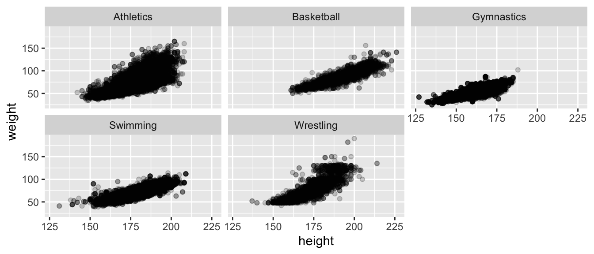
Boxplots
NoteEX2.22 — show question
EX2.22 (★★) Build side-by-side boxplots of age by season. Which season’s athletes skew older?
Solution (reference: Section 2.7 “Boxplots”).
Winter Games athletes skew slightly older — sports like curling, biathlon, and bobsleigh keep peak ages later than gymnastics or sprinting.
ggplot(olympic_athletes, aes(x = season, y = age)) +
geom_boxplot()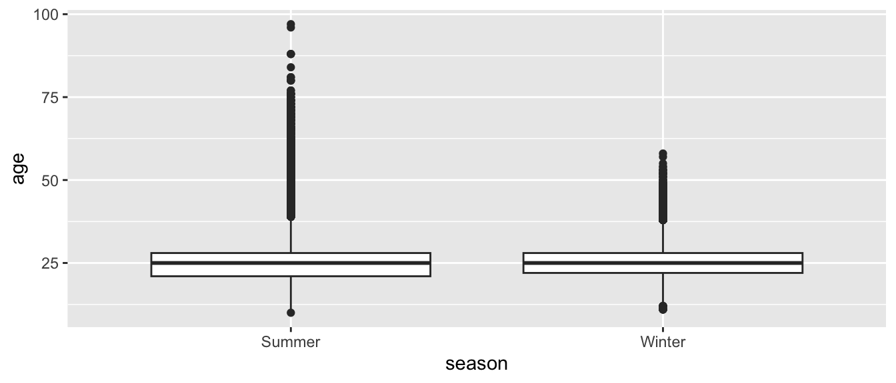
NoteEX2.23 — show question
EX2.23 (★★) Filter olympic_athletes to sport %in% c("Weightlifting", "Cycling Road", "Marathon", "Equestrianism", "Sailing") and build boxplots of weight (not height — height is covered in EX 2.26) for those five sports. Which sport has the largest IQR, and what does that range tell you about athletes in that sport?
Solution (reference: Section 2.7 “Boxplots”).
Weightlifting typically shows the largest IQR — weight classes span featherweight to super-heavyweight, so a single boxplot bundles all of them and looks very spread out. The other four sports each have a narrower physique profile.
olympic_athletes |>
filter(sport %in% c("Weightlifting", "Cycling Road", "Marathon",
"Equestrianism", "Sailing")) |>
ggplot(aes(x = sport, y = weight)) +
geom_boxplot() + coord_flip()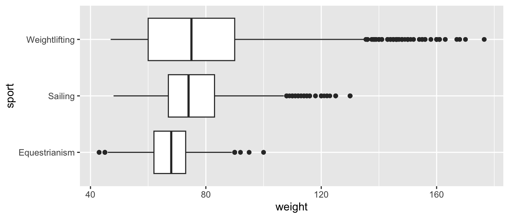
NoteEX2.24 — show question
EX2.24 (★★) A single boxplot for all sports would have hundreds of boxes. Why is filtering to a few sports a better visualization choice than showing them all?
Solution (reference: Section 2.7 “Boxplots”, chart legibility).
Visual clutter masks the signal. With 50+ boxes, individual medians are unreadable, axis labels overlap, and the chart conveys “lots of sports” instead of any specific comparison. Selecting a small set lets the reader actually compare.
NoteEX2.25 — show question
EX2.25 (★★★) A boxplot of weight for one sport shows many “outlier” dots above the upper whisker. Are these necessarily data errors? Justify in 1–2 sentences.
Solution (reference: Section 2.7 “Boxplots”, IQR rule).
No. Boxplot “outliers” use the \(Q_3 + 1.5 \times \text{IQR}\) rule and flag any unusually large value relative to the bulk — but heavyweight sports legitimately produce athletes well above average. They’re statistical outliers, not necessarily errors.
NoteEX2.26 — show question
EX2.26 (★★) Build side-by-side boxplots of height for sport %in% c("Athletics", "Gymnastics", "Basketball", "Swimming", "Wrestling"). From the resulting plot, read off (eyeballing is fine): (a) the rough median height for each sport, (b) which sport has the tightest IQR, and (c) which sport’s whiskers extend the furthest above its median.
Solution (reference: Section 2.7 “Boxplots”).
Approximate readings (your eyeballs may differ):
- Medians: Basketball ≈ 195 cm, Swimming ≈ 180 cm, Athletics ≈ 178 cm, Wrestling ≈ 172 cm, Gymnastics ≈ 162 cm.
- Tightest IQR: Gymnastics — the box is short; gymnasts are a narrow height range relative to other sports.
- Whiskers furthest above the median: Basketball — the upper whisker stretches to ~215 cm because of centers and forwards in the tail.
olympic_athletes |>
filter(sport %in% c("Athletics", "Gymnastics", "Basketball",
"Swimming", "Wrestling")) |>
ggplot(aes(x = sport, y = height)) +
geom_boxplot() +
coord_flip() +
labs(y = "height (cm)", x = NULL)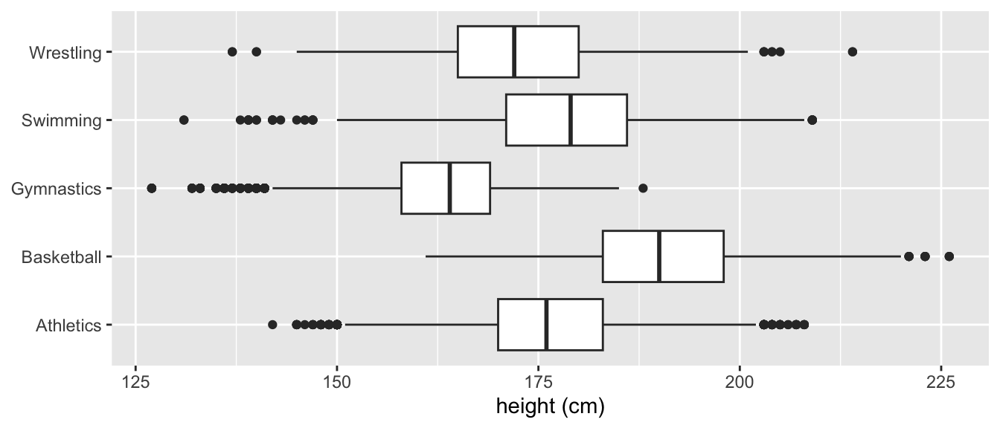
Barplots
NoteEX2.27 — show question
EX2.27 (★★) Filter medal_table to games == "2024 Summer", then build a horizontal bar chart of total per noc. Use geom_col(aes(y = reorder(noc, total))) to sort the bars by descending medal count. Which NOC tops the chart?
Solution (reference: Section 2.8 “Barplots”, geom_col + reorder).
The U.S. is typically the top medal-winner at the 2024 Summer Games.
medal_table |>
filter(games == "2024 Summer") |>
ggplot(aes(x = total, y = reorder(noc, total))) +
geom_col() +
labs(x = "Total medals", y = NULL, title = "2024 Summer — every NOC's medal total")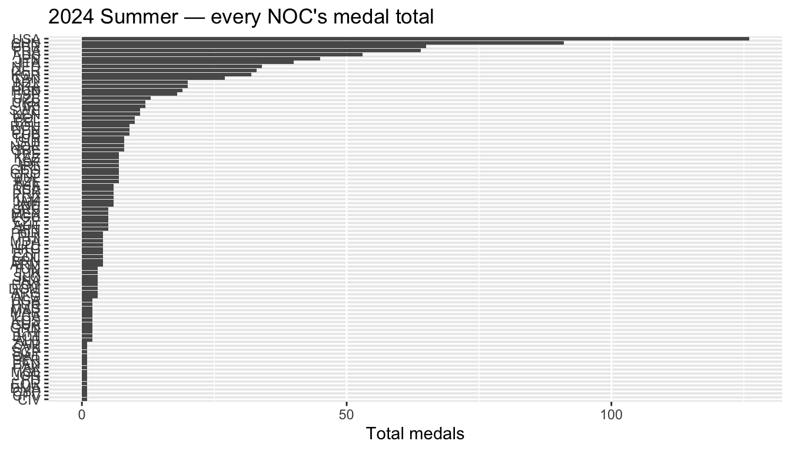
Because each row of medal_table already records a single Games × NOC pair, geom_col() (which expects pre-computed bar heights) is the right geom — no counting needed. reorder(noc, total) sorts the bars by descending medal count.
NoteEX2.28 — show question
EX2.28 (★★) Use geom_bar() on olympic_athletes to plot athlete-row counts by season, with fill = sex. By default the two sex levels stack within each season bar. Roughly, what’s the male-to-female ratio in each season?
Solution (reference: Section 2.8 “Barplots”, stacked bars (default position)).
Both seasons skew male-heavy historically — Summer is closer to parity (roughly 60/40 male/female across all Games) while Winter is more lopsided. geom_bar() counts rows internally, so adding fill = sex is all it takes to split each season’s bar into two stacked pieces.
ggplot(olympic_athletes, aes(x = season, fill = sex)) +
geom_bar()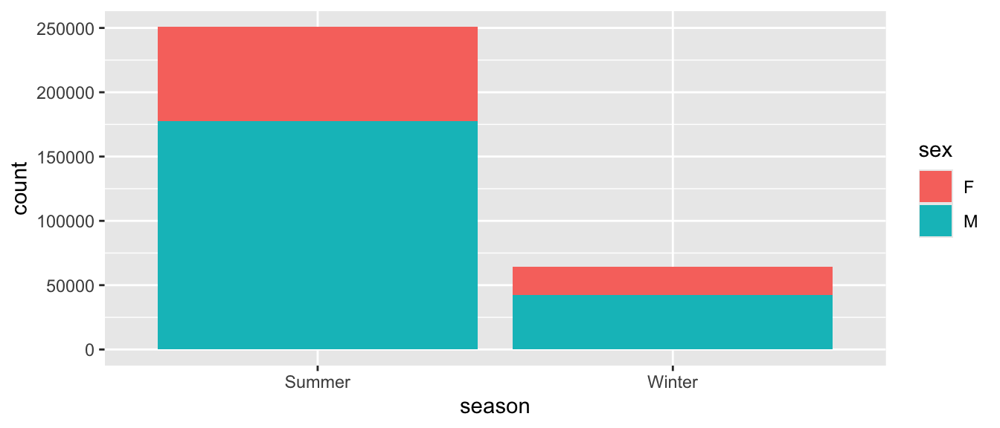
NoteEX2.29 — show question
EX2.29 (★★) Filter olympic_athletes to year == 2024 & season == "Summer". Build a geom_bar() of athlete-rows by medal. The NA bar dominates — why? (Hint — think about what fraction of athletes at any Games win no medal in any event.)
Solution (reference: Section 2.8 “Barplots”, geom_bar counts internally).
The NA bar dwarfs the medal bars because at any single Games, the vast majority of athletes who compete don’t end up on a podium — only the top three per event get a medal, but every roster member of every team gets a row in olympic_athletes. The medal bars themselves should be roughly equal in size (each event awards one gold, one silver, one bronze).
olympic_athletes |>
filter(year == 2024, season == "Summer") |>
ggplot(aes(x = medal)) + geom_bar()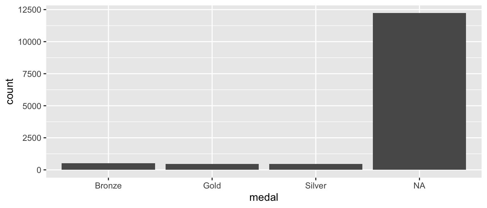
NoteEX2.30 — show question
EX2.30 (★★) Use geom_bar() (not geom_col()) on olympic_athletes to show the count of athlete-rows per season. Why is geom_bar() the right choice here, not geom_col()?
Solution (reference: Section 2.8 “Barplots”, geom_bar() vs `geom_col()).
geom_bar() counts rows — exactly what we want here (no pre-tallying needed). geom_col() requires a pre-computed y value.
ggplot(olympic_athletes, aes(x = season)) + geom_bar()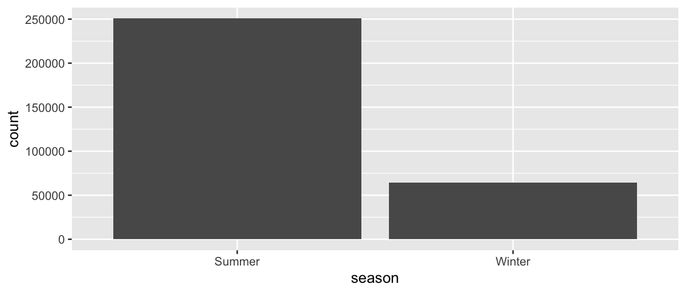
NoteEX2.31 — show question
EX2.31 (★★★) A pie chart of the top-10-NOC medal totals from EX2.27 would be visually appealing. Give two reasons the chapter argues a barplot is better.
Solution (reference: Section 2.8 “Must avoid pie charts!”).
- Humans judge length more accurately than angle: differences between similar-sized slices are nearly impossible to perceive. (2) Sorted bars convey ranking at a glance, while pie slices need a legend or numeric labels for the same effect.
NoteEX2.32 — show question
EX2.32 (★★) On olympic_athletes, rebuild your EX 2.28 plot but switch from the default stacked bars to side-by-side bars with position = "dodge". What’s easier to see in the dodged version that was harder in the stacked one?
Solution (reference: Section 2.8 “Barplots”, dodged bars).
In the stacked version (EX 2.28), male and female totals sit on top of each other within a single bar, so it’s hard to read the absolute count of each separately. Dodging puts the male and female bars side by side inside each season, making the per-sex absolute counts directly comparable across the four bars.
ggplot(olympic_athletes, aes(x = season, fill = sex)) +
geom_bar(position = "dodge")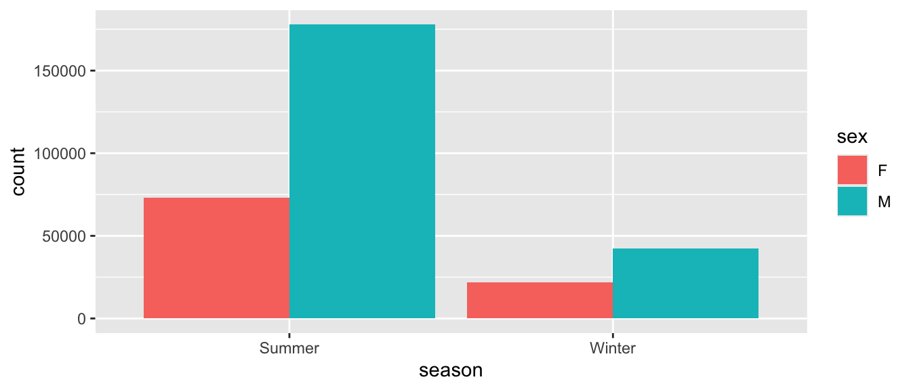
NoteEX2.33 — show question
EX2.33 (★★) Take your EX 2.28 stacked barplot of athlete-rows by season filled by sex, and switch the geom_bar() argument to position = "fill". Now each season’s bar reaches 100 %. Compare the two charts: what new question does the proportional version answer (that the stacked-counts version cannot), and conversely what does the stacked version show that gets hidden when you switch to proportions?
Solution (reference: Section 2.8 “Barplots”, position = "fill").
ggplot(olympic_athletes, aes(x = season, fill = sex)) +
geom_bar(position = "fill")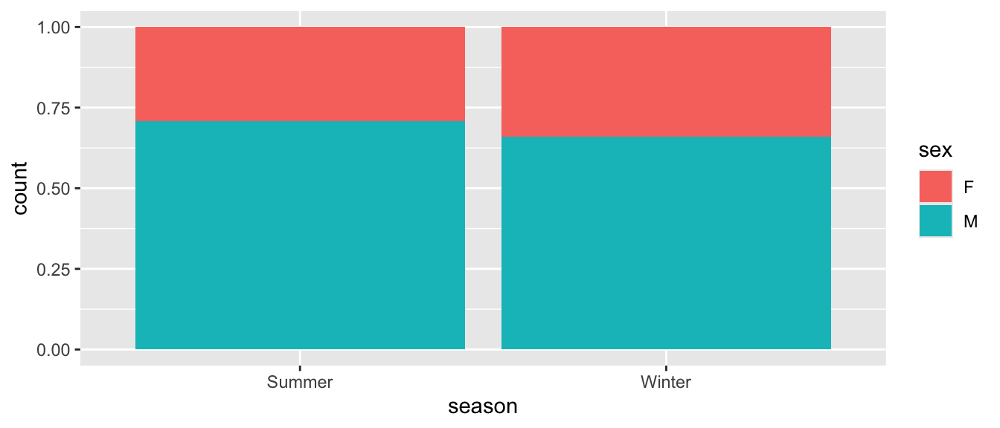
What the proportional version answers (that the stacked-counts version cannot): what share of each season’s athletes are male vs. female? Both bars now reach 100 %, so the relative balance is directly readable on the y-axis.
What the stacked version showed (and the proportional version hides): the absolute count of athletes per season — i.e., that Summer has many more athletes than Winter to begin with. After position = "fill", the two seasons look like equally tall bars, regardless of how many athletes each Games actually had.
Counts answer “how many?”; proportions answer “what share?”. Different questions, different geom configurations.
Critical thinking and open exploration
NoteEX2.34 — show question
EX2.34 (★★★) Imagine a news outlet posts a chart of “USA’s medal dominance” using a y-axis that starts at 50 (cropping the bar baseline). Explain in 2–3 sentences how the chart misleads viewers, and what a more honest chart would look like.
Solution (reference: Section 2.8 “Barplots”, chart honesty).
Cropping the y-axis exaggerates differences — a USA total of 120 vs a peer’s 90 looks like 4× as many (70 vs 40 above the cropped origin) instead of the true 1.33×. An honest version starts the y-axis at zero, or uses a non-bar geom (e.g., points + connecting line) where a non-zero baseline is conventionally acceptable.
NoteEX2.35 — show question
EX2.35 (★★★) Pick any chart you’ve built in this chapter and write a short chart caption (2–3 sentences) suitable for publishing in a news article. The caption should (a) state the finding, (b) identify the data source, and (c) flag one caveat about the data (e.g., missingness, selection, sample size). Compare your caption to the chart’s labs(title = ..., caption = ...) and revise either as needed.
Solution (reference: Chapter 2 synthesis — chart-quality thinking).
Answers will vary. Example caption for the EX 2.27 horizontal barplot of 2024 Summer medal totals:
“United States led the 2024 Summer medal table with 126 total medals, followed by China (91) and Great Britain (65). Source:
medal_tablefrom theolympicAthletesR package. Caveat: the chart shows total medals counted with one row per athlete on every medal-winning team, so team sports (basketball, water polo, relays) contribute multiple rows per podium — the ranking is sensitive to how team medals are tallied.”
Then revise the chart’s own labs() to include the same title, a caption naming the data source, and an x label like “Total medals (2024 Summer)”. A good chart and a good caption say the same thing in two slightly different ways.
NoteEX2.36 — show question
EX2.36 (★★★) This chapter introduced the 5 named graphs (5NG): scatterplot, linegraph, histogram, boxplot, barplot. For each of the five, write one sentence describing a question about Olympic athletes that the geom would be the right tool to answer. (No code required — this is a matching-question-to-geom exercise.) When you’re done, pick one of your five questions and identify which Ch 2 exercise from this chapter most closely resembles it.
Solution (reference: Chapter 2 synthesis — the 5 named graphs (5NG)).
Answers will vary. Example matchups:
- Scatterplot — “Is taller and heavier correlated across Olympic athletes?” (two numerical variables →
geom_point; closest to EX 2.6). - Linegraph — “How has the number of participants per Games changed over time?” (one numerical variable over an ordered axis →
geom_line; closest to EX 2.13). - Histogram — “What’s the typical age of an Olympic competitor, and is there a long tail of older athletes?” (one numerical variable →
geom_histogram; closest to EX 2.15). - Boxplot — “Which sport’s athletes are most consistent in body weight?” (one numerical variable split by a categorical →
geom_boxplot; closest to EX 2.23). - Barplot — “At the 2024 Summer Games, how did medal totals stack up by NOC?” (counts of a categorical variable →
geom_bar/geom_col; closest to EX 2.27).
The 5NG framework is a quick triage tool: figure out how many numerical/categorical variables your question involves, and the geom usually picks itself.
NoteEX2.37 — show question
EX2.37 (★★★) Re-run your EX 2.4 scatterplot of weight vs height and read the Removed N rows… warning carefully. Approximately what proportion of athlete-rows have either a missing height or a missing weight? Given that, what conclusion about Olympic athletes should you not draw from this scatterplot until you understand why those rows are missing?
Solution (reference: Chapter 2 synthesis — reading ggplot warnings).
The warning text is the data-quality signal: roughly 30–35 % of athlete-rows have a missing height and/or weight. The right inference is “the cloud you’re looking at describes athletes whose bio data was recorded” — not “Olympic athletes in general.” Athletes from early-20th-century Games (where bio data wasn’t systematically reported) and from very recent Games (where privacy policies suppress some entries) are under-represented in the visible scatter. Any claim about “Olympic athletes are X tall and Y heavy” needs that caveat.
ggplot(olympic_athletes, aes(x = height, y = weight)) +
geom_point(alpha = 0.05)Warning: Removed 92382 rows containing missing values or values outside the scale range
(`geom_point()`).
NoteEX2.38 — show question
EX2.38 (★★★) Using editions, build a scatterplot of medal_events (y) vs participants (x), colored by season. Are bigger Games (more athletes) also more medal-rich? Does the pattern look the same for Summer and Winter?
Solution (reference: Section 2.3 “Scatterplots”, color aesthetic).
More participants generally accompanies more medal events, but Summer and Winter sit on completely different scales — Summer Games have ~10× the athletes and ~3× the medal events of Winter Games. Coloring by season shows that the apparent positive correlation in the overall cloud is partly driven by the season split itself: each season’s own cluster has a much weaker internal trend.
ggplot(editions, aes(x = participants, y = medal_events, color = season)) +
geom_point(size = 3) +
labs(x = "participants", y = "medal events")Warning: Removed 5 rows containing missing values or values outside the scale range
(`geom_point()`).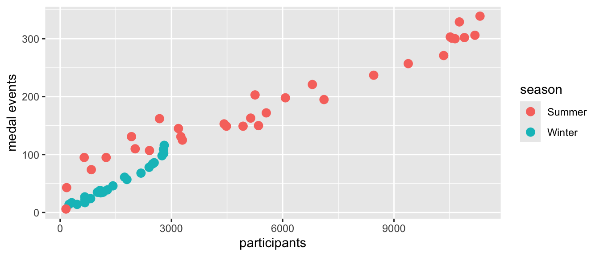
NoteEX2.39 — show question
EX2.39 (★★★) Open exploration: using any of the three datasets, find one pattern that surprises you. Build the single chart that communicates it best, and write a one-sentence headline above it.
Solution (reference: Chapter 2 — synthesis).
Answers will vary. One example: medal share is heavily right-skewed — a small number of NOCs win the bulk of medals each Games.
medal_table |>
filter(games == "2024 Summer") |>
arrange(desc(total)) |>
mutate(rank = row_number()) |>
ggplot(aes(x = rank, y = total)) +
geom_col() +
labs(x = "noc rank", y = "Total medals",
title = "2024 Summer — long tail of medal distribution")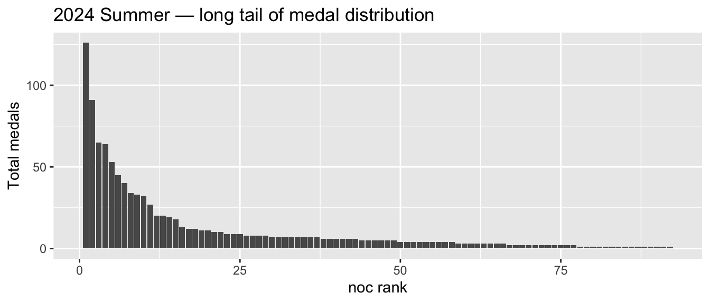
Extensions
NoteAbout these Extensions
The exercises below deliberately introduce functions and concepts beyond what this chapter teaches — log transformations, predict(), new packages, foreshadowing later chapters. They are optional, aimed at readers who want to push further. The main Exercises and Quick checks above stick strictly to what this chapter covers.
NoteEX2.40 — show question
EX2.40 (◆◆) Themes. ggplot’s default look isn’t the only option. Try theme_minimal(), theme_bw(), and theme_classic() on the basketball scatterplot from EX 2.6. Which would you reach for in a printed report vs. a slide deck? Why?
Solution (reference: Extension: ggplot themes).
theme_minimal() strips the gray panel background and most gridlines — clean for printed reports where heavy ink wastes paper. theme_classic() adds axis lines only (no gridlines, no background) — great for slide decks where you want maximum data-ink ratio at low resolution. theme_bw() keeps faint gridlines but drops the gray panel — a good general-purpose default. The default theme (theme_gray) is fine for exploratory work but looks dated in polished output.
NoteEX2.41 — show question
EX2.41 (◆◆) Color-blind-safe palettes. Default ggplot colors look bright but aren’t always distinguishable for readers with color-vision deficiencies. The viridis palette family (scale_color_viridis_d() for discrete, scale_color_viridis_c() for continuous) is designed to be both attractive and perceptually robust. Apply it to a Height-vs-Weight scatter colored by season. How does the visual distinction compare to the default?
Solution (reference: Extension: viridis palettes).
ggplot(olympic_athletes, aes(x = height, y = weight, color = season)) +
geom_point(alpha = 0.3) +
scale_color_viridis_d()Warning: Removed 92382 rows containing missing values or values outside the scale range
(`geom_point()`).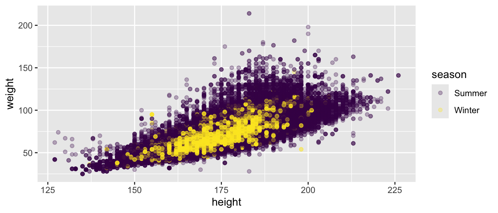
Viridis is perceptually uniform — equal steps in the data correspond to equal perceived steps in color, even for readers with red-green color blindness. The default ggplot palette uses hues chosen to look distinct to readers with typical color vision but can collapse to near-identical grays for some color-vision deficiencies. As a rule of thumb, default to viridis for any chart that will be published or shared widely.
NoteEX2.42 — show question
EX2.42 (◆◆) Saving plots to file. ggsave() saves the last plot (or a named plot object) to disk in your preferred format and dimensions. Save a histogram of age as a 6-inch × 4-inch PNG at 300 DPI. Then save the same plot as a PDF. Which format is better for inclusion in a printed report? In a website? Why?
Solution (reference: Extension: ggsave).
ggsave("age_hist.png", p, width = 6, height = 4, dpi = 300) writes a 6 × 4-inch PNG at print resolution.
- PNG is a raster format (a grid of pixels). Good for the web (small files, broad browser support) but quality degrades when scaled up beyond its DPI.
- PDF / SVG are vector formats (a list of shapes). They scale arbitrarily without quality loss — essential for printed reports, journal submissions, and posters.
Rule of thumb: PDF for print, PNG (or SVG) for web. The same ggsave() call works for both — just change the extension.
NoteEX2.43 — show question
EX2.43 (◆◆) Annotating plots with annotate(). Use annotate("text", ...) and annotate("rect", ...) to draw the reader’s eye to a specific cluster in the Height-vs-Weight scatter — for example, the basketball-center region (≥ 200 cm tall, ≥ 100 kg). Briefly: what’s the difference between annotate() and geom_text() for labeling individual points?
Solution (reference: Extension: annotate()).
annotate(...) places a single label/shape at fixed coordinates — useful for guiding the reader’s eye to one specific region (a cluster, an outlier, a threshold line). geom_text(aes(label = name)), by contrast, draws one label per data row — useful when every point deserves its own label (small datasets only — anything bigger than ~30 points gets unreadable). For the basketball-centers callout, annotate() is the right tool: one label for the region, not one label per athlete.
NoteEX2.44 — show question
EX2.44 (◆◆) Density plots. A density plot is a smoothed alternative to a histogram — geom_density() instead of geom_histogram(). Build one for age, and compare it to the histogram you built in EX 2.15. When is the density’s smoothing helpful, and when is the histogram’s integer-bin honesty (each spike = real count) more useful?
Solution (reference: Extension: density plots).
ggplot(olympic_athletes, aes(x = age)) +
geom_density(fill = "steelblue", alpha = 0.5)Warning: Removed 21349 rows containing non-finite outside the scale range
(`stat_density()`).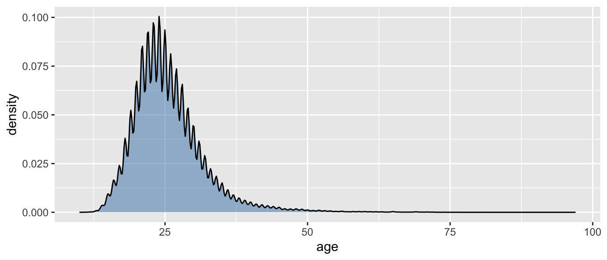
Density’s smoothing is helpful when the data are continuous and bin-edge choices feel arbitrary — it averages over the bin question. The histogram’s per-bin honesty is more useful when ages have integer spikes (e.g., a notable bump at exactly 18 from minimum-age rules) that the smoother would wash away.
NoteEX2.45 — show question
EX2.45 (◆◆) Violin plots. geom_violin() combines a boxplot’s summary with a density’s shape — wide where data is dense, narrow where sparse. Overlay a geom_violin() and a narrow geom_boxplot() for height across three sports. What does the violin show that a boxplot alone hides? (Hint — modality.)
Solution (reference: Extension: violin plots).
olympic_athletes |>
filter(sport %in% c("Athletics", "Swimming", "Basketball")) |>
ggplot(aes(x = sport, y = height)) +
geom_violin(fill = "lightgray") +
geom_boxplot(width = 0.2)Warning: Removed 15738 rows containing non-finite outside the scale range
(`stat_ydensity()`).Warning: Removed 15738 rows containing non-finite outside the scale range
(`stat_boxplot()`).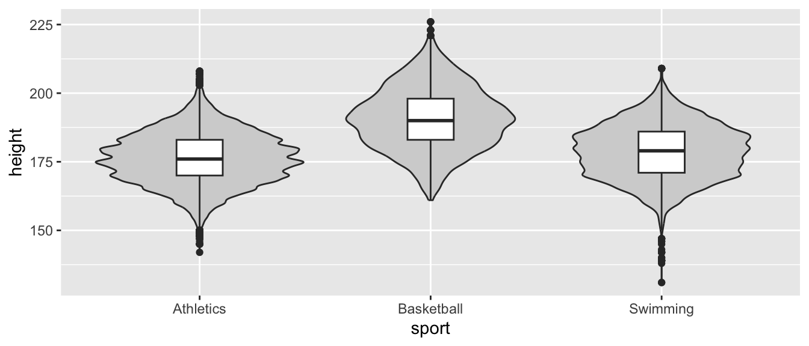
A boxplot tells you the median and IQR but is blind to modality — a unimodal distribution and a bimodal one with the same median and IQR look identical. The violin’s outline reveals shape: if there are two clusters at different heights (e.g., separate sub-populations of athletes), the violin will be wide at both heights with a narrow waist between them.
NoteEX2.46 — show question
EX2.46 (◆◆◆) Nonlinear smoothing with loess. geom_smooth(method = "loess") draws a locally-fitted curve through the data, no equation required — handy for spotting shape before committing to a model. Add it to your Height-vs-Weight scatter. Where does the curve depart from a straight line? (This previews Chapter 5, which formally introduces linear regression with method = "lm".)
Solution (reference: Extension: loess smoothing).
ggplot(olympic_athletes, aes(x = height, y = weight)) +
geom_point(alpha = 0.05) +
geom_smooth(method = "loess", color = "red")Warning: Removed 92382 rows containing non-finite outside the scale range
(`stat_smooth()`).Warning: Failed to fit group -1.
Caused by error in `predLoess()`:
! workspace required (74400674057) is too large probably because of setting 'se = TRUE'.Warning: Removed 92382 rows containing missing values or values outside the scale range
(`geom_point()`).
The loess curve typically bends upward at high heights — taller athletes are heavier-than-linear (longer levers + thicker bones). A straight line would understate weight at the extremes. Chapter 5’s method = "lm" will fit the best straight line through this cloud, with R² measuring how much of the structure that line captures.
NoteEX2.47 — show question
EX2.47 (◆◆◆) Interactive ggplots with plotly::ggplotly(). A single function call turns any ggplot into an interactive widget — readers can hover for tooltips, zoom, and pan. Try it on a height-vs-weight scatter colored by sport. When is the interactive version genuinely more useful than a static one? When does it just add load time without adding insight?
Solution (reference: Extension: plotly::ggplotly).
Interactive ggplots are most valuable when (a) the reader needs to identify specific points (hover for the athlete name), (b) the chart has too many overlapping points to read statically (zoom to disambiguate), or (c) the chart will live in an HTML report where readers can explore. The cost: every interactive plot bloats the HTML payload with embedded JavaScript and data — fine for one or two key charts, painful for dozens in a single document.
NoteEX2.48 — show question
EX2.48 (◆◆◆) Composing multiple plots with patchwork. The patchwork package lets you arrange ggplots in arbitrary grids using + (side-by-side), / (stacked), and parentheses. Build a 2-on-top, 1-on-bottom layout showing histograms of age, height, and weight. Briefly — why is patchwork a better choice here than building a faceted plot with facet_wrap()?
Solution (reference: Extension: patchwork composition).
library(patchwork)
p1 <- ggplot(olympic_athletes, aes(x = age)) + geom_histogram(bins = 30)
p2 <- ggplot(olympic_athletes, aes(x = height)) + geom_histogram(bins = 30)
p3 <- ggplot(olympic_athletes, aes(x = weight)) + geom_histogram(bins = 30)
(p1 + p2) / p3Warning: Removed 21349 rows containing non-finite outside the scale range
(`stat_bin()`).Warning: Removed 86542 rows containing non-finite outside the scale range
(`stat_bin()`).Warning: Removed 90938 rows containing non-finite outside the scale range
(`stat_bin()`).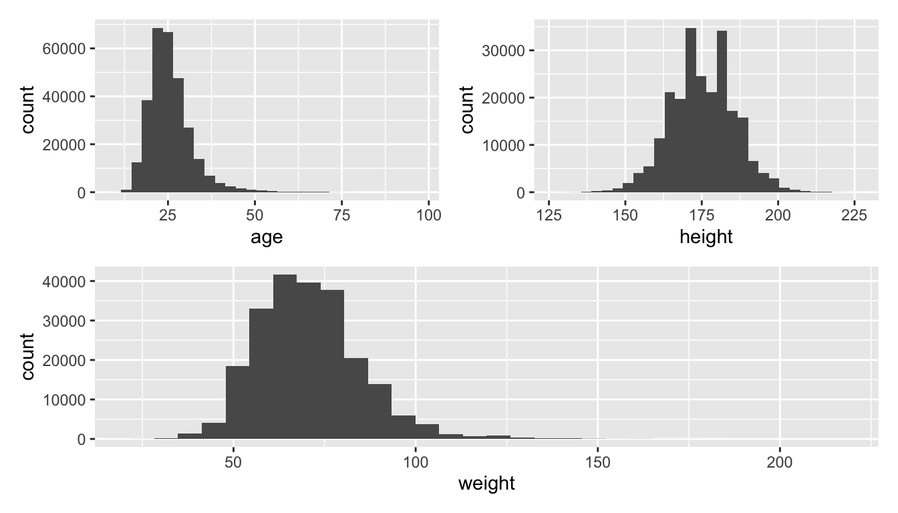
facet_wrap() requires the data to be in long format with a single shared scale — fine when you’re slicing one variable by a group, but here we want to show three different variables on different scales. patchwork lets each plot be entirely independent (different axes, themes, even data sources) while still arranging them in one figure.
NoteEX2.49 — show question
EX2.49 (◆◆◆) ylim() vs coord_cartesian(). Both restrict the y-axis range — but ylim() removes points outside the range before statistics like geom_smooth() run, while coord_cartesian(ylim = ...) zooms the view after statistics run. Run the comparison above. Why does the smoother differ between the two panels?
Solution (reference: Extension: ylim vs coord_cartesian).
ylim(50, 120) removes the rows with weight outside [50, 120] before any stats run, so geom_smooth() fits to a subset of the data. coord_cartesian(ylim = c(50, 120)) keeps all rows in the fit and just zooms the visible window afterward. The smoother in the trimmed version is fit on fewer (and skewed) data; the smoother in the zoomed version reflects the full dataset’s structure. Almost always you want coord_cartesian() — trimming silently changes what your statistics describe.